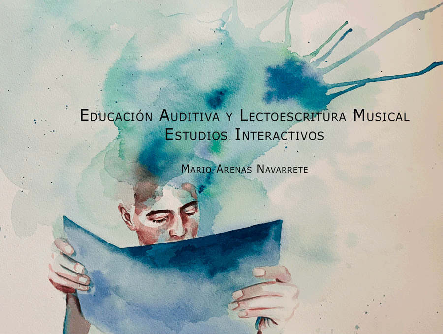

Este libro, tiene como propósito contribuir a la adquisición de competencias en la educación auditiva y lectoescritura musical. En términos didácticos, aborda contenidos teóricos de la tradición de la música escrita occidental y seguidamente los contextualiza en un discurso sonoro ya sea mediante ejercicios específicos o expresivas miniaturas. El énfasis metodológico se cimenta en el comportamiento de los contenidos tratados dentro del flujo sonoro. Mediante su práctica, complementada con ejercicios técnicos y dictados, espera facilitar el análisis, memorización y reconocimiento de ritmos, pies métricos, intervalos, figuraciones armónicas, escalas, intercambios modales, entre otras materias, para lograr escribir con signos convencionales de la música occidental, aquello que se escucha en términos rítmicos, melódicos y armónicos.
Evita la realización de anclajes didácticos en texto. Espera que surjan desde las reflexiones producidas por aquello que permiten las partituras: organizar sistemáticamente la transformación acústica de la realidad a través de fenómenos musicales mediante signos musicales aceptados por la academia.
Para incentivar el estudio autónomo, este libro permite observar y escuchar mediante vídeos, a sus partituras que se despliegan mientras se reproducen. Se accede utilizando códigos QR, instalados en cada página. Para la edición total de las mismas (tempo, dinámica, agógica, instrumentación, etc.) y su aplicación como karaoke, se dispone de la versión del libro completo (en formato .mxl) alojada en internet, permitiendo desplegarlas en el programa gratuito MuseScore (con el que fueron escritas) o en otros como Finale, Sibelius, Graphire Music Press, Encore, etc.
Esta obra pretende inspirar, interesar al estudiantado en la creación de ejercicios propios proyectados hacia la composición musical. Se puede iniciar en la edición de voces, o en el aprendizaje que otorga la experimentación en el cambio de la instrumentación y el tempo, posibilitando la generación de nuevos discursos sonoros y expresivos, incluso, más allá de los que contemplan sus miniaturas musicales. Esta posibilidad dinámica evita la cristalización del texto, pese a que se presenta en formato papel.
La composición musical es una experiencia que puede llegar a transformarse en una revelación filosófico - existencial trascendente. Para iniciarla, se debe tomar la decisión de dar el paso y comenzar… Estas primeras propuestas surgen desde la manipulación digital o analógica de este libro, embrión que espero, sea auspicioso.
Mario Arenas Navarrete
Agradecimientos.
Deseo expresar mi gratitud a María Isabel, que siempre me estimula a crear y al mismo tiempo, critica amorosamente mis trabajos. Los anclajes extramusicales (títulos de las piezas) los puso en virtud de lo que le evocaban.
A mi hija Valentina, por la elaboración de la acuarela que expresa con su obra, la aspiración epistemológica del libro a través de la portada.
A mi hijo Rodrigo, que en medio de sus múltiples actividades, se dio el tiempo para apoyarme en la elaboración de este sitio web, que está en plena construcción.
Quiero agradecer al Dr. Jesús Tejada Gimenez, de la Universidad de Valencia, quien escribió el prólogo de este libro, por su permanente apoyo a mi labor creativa y académica.
A los profesionales de la Editorial Barker and Jules, quienes me apoyaron en la elaboración de los códigos QR, edición, maquetación y traducción al inglés del libro. Gran equipo consitituido por Lorena Franco, Armando Saint Martin, Renata Dávila y Gustavo Novas.
Quiero agradecer a la Universidad de La Serena, espacio soñado para todo(a) músico(a) - profesor(a) o investigador(a) que desee desarrollarse. Tanto sus autoridades como colegas, que han estado prestos a colaborar ya sea en la gestión, creación como en el montaje de estas piezas, mediante su participación como instrumentistas o por medio de sus propios estudiantes.
Al Dr. Cristian Noemi, Decano de la Facultad, que siempre me ha apoyado, a los directores Andrés Rosson y Leonardo Godoy que me han otorgado las facilidades para dedicarme a componer; a mis queridos colegas Martín Herrera, Sergio Fuentes, Elena Jaime, Raúl (Talo) Pinto, Reynaldo Ferrera, Susan Jofré, Alejandro Meléndez, Pablo Pallero, Milén Godoy, y al dúo conformado por los destacados músicos José Luis Urquieta (oboe) y Victoria Vial (piano), entre otros, quienes participarán en el lanzamiento de este libro, ejecutando algunas de sus piezas.
Al Profesor Christopher Toledo, que obtuvo el permiso de los y las apoderadas de los niños que participaron y al Profesor Paolo Santa Cruz, que otorgó parte de sus clases para ensayar una pieza con un entusiasta curso de Quinto Básico.
Finalmente, agradecer a mis estudiantes, tanto de la Carrera de Licenciatura en Música, contexto donde compuse algunas de las piezas y de Pedagogía en Educación Musical, puesto que las miniaturas y ejercicios las compuse para abordar contenidos en las clases. Entre mis ex-estudiantes, merece una mención especial el profesor Alfredo Gallardo, recién titulado... quién puso texto a varios de los solfeos...
